CASE LAB · АНОНИМНЫЙ ЗАМЕР · 15 ЗАПРОСОВ · ЭКСПЕРИМЕНТ EXH-05
Проверка авторских терминов: узнаёт ли нейросеть наш словарь
Мы задали анонимной Алисе AI пятнадцать вопросов об авторских терминах лаборатории — «цифровой призрак», «контентный маяк», «запросный двойник» — и о нас самих. Без аккаунта, без подсказок, каждая сессия чистая. Пять терминов из тринадцати модель раскрыла в нашем смысле, а на вопрос «кто придумал термин» ответила именем основателя лаборатории.
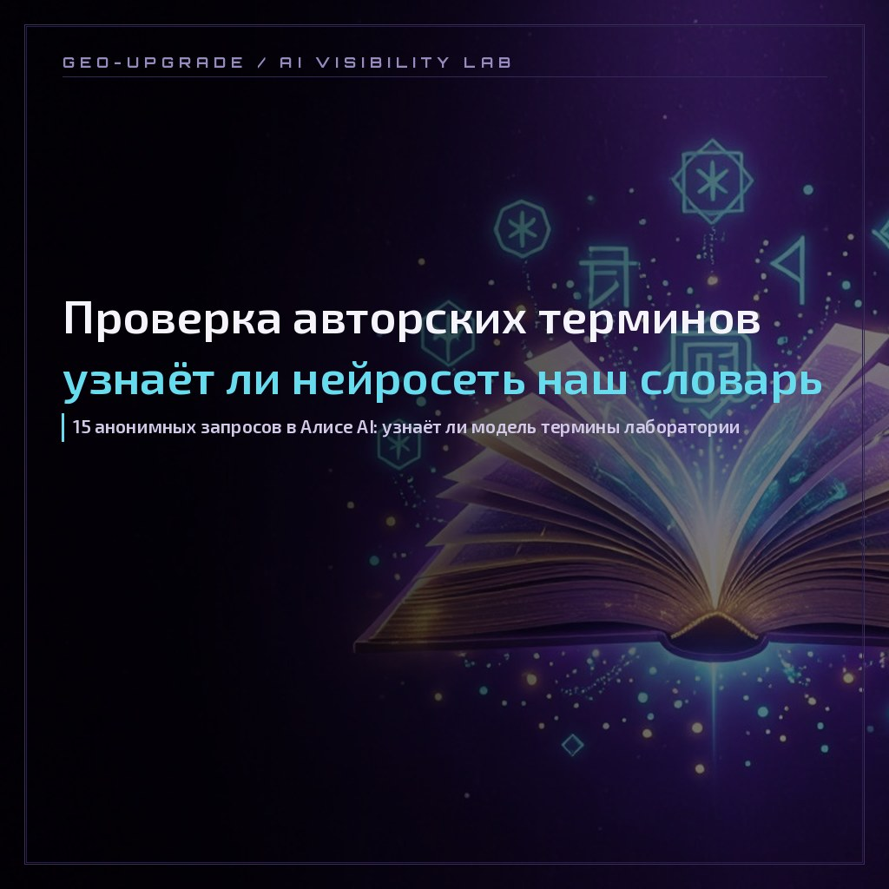
Case type: Lab Protocol
| Экспонат | EXH-05 · проверка авторских терминов лаборатории |
|---|---|
| Запуск | вечер 21 октября 2026 · старт прогона 23:05 по Новосибирску · скрины фиксируют 23:22 и 23:25 |
| Инструмент | инструмент «Протокол прогона»: 15 запросов в 4 группах, журнал ответов, авторасчёт сводки |
| Нейросеть | Алиса AI, веб-версия, без аккаунта · новая сессия на каждый запрос · копипаст, без подсказок |
| Что проверяли | узнавание 13 авторских терминов, связку «термин → бренд», узнавание интерактива, всплывание бренда в нише города |
| Группы | A · термин ×7 · B · бренд+термин ×4 · C · контекст ×3 · D · контроль ×1 |
| Исполнитель | прогоны — Дарья Жарких · разбор и вёрстка кейса — лаборатория GEO-Апгрейд |
| Статус | прогон №5 · опубликован; повторный замер на стабильность — в плане |
1. Зачем проверять авторские термины
У лаборатории есть собственный словарь: цифровой призрак, контентный маяк, зона слепоты, эхо-кольцо, контекстный якорь, запросный двойник, AI-лид, AI-след бренда. Термины живут в глоссарии, статьях и кейсах — но весь смысл этого языка проверяется одним вопросом: узнаёт ли нейросеть термин, если спросить у неё напрямую, не называя нас.
Если модель раскрывает термин в нашем смысле — словарь работает: слово сжимает методику в одну формулировку. Если подставляет чужое значение — это дрейф: слово плавает в сторону общепринятых тем и уводит от бренда. Если сочиняет своё — термин пока не закрепился вовсе.
Прецедент мы уже видели: в базовом замере осенью модель приписывала «цифровой призрак» чужому блогу. Этот кейс — проверка, что изменилось: атрибуция термина теперь закреплена, или дрейф повторяется.
Три статуса в разметке: УЗНАН — смысл наш, ДРЕЙФ — чужое значение, ФАНТАЗИЯ — модель сочинила своё. Отдельно контролируем связку «термин → бренд»: названа ли лаборатория и чьи источники модель цитирует.
2. Как шёл прогон: 15 запросов
Условия прогона заданы протоколом заранее, до первого запроса: веб-версия Алисы без аккаунта, анонимно; каждая сессия новая — модель не видит предыдущих ответов; запросы вводятся копипастом один в один; скрины фиксируются по ходу; источники ответа записываются в журнал.
Запросы разбиты на четыре группы. Группа A — чистые термин-запросы: узнаёт ли модель слово само по себе. Группа B — бренд и термин вместе: связывает ли модель их между собой. Группа C — контекстные: наш интерактив, ниша города, «AI-след бренда». Группа D — контроль: формулировка, которую задают тысячи людей, в ответах на неё должны быть только чужие сервисы.
- AЧто такое цифровой призрак в GEO-маркетинге? узнан
- AКонтентный маяк — что это значит? дрейф
- AЧто такое AI-лид? дрейф
- AЧто такое зона слепоты бренда? дрейф
- AЧто такое эхо-кольцо? дрейф
- AЧто такое контекстный якорь? дрейф
- AЧто такое запросный двойник? узнан
- BКакие термины использует лаборатория GEO-Апгрейд? дрейф
- BЦифровой призрак GEO-Апгрейд — что это? узнан
- BКто придумал термин «цифровой призрак» в SEO? узнан
- CКакие агентства в Томске пишут про AI-видимость? ниша: нас называют
- CПризрак или маяк — тест AI-видимости бренда фантазия
- CЧто такое AI-след бренда? узнан
- DКак проверить, видит ли нейросеть мой бренд в Томске? контроль чист
- CПолупризрак — что это в контексте AI-видимости? фантазия
Заголовок таблицы мог бы быть скучным — поэтому сразу честная оговорка: пять формулировок мы немного уточнили против исходного протокола. №1 шёл как «в GEO-маркетинге» вместо «в маркетинге», №5, №7 и №10 — с уточнением «в GEO», №14 — с добавкой «в Томске». Прогон валиден, но при сравнении с ранними замерами учтите разницу формулировок.
3. Результаты: цифры
запросов · 13 терминов + 2 контекстных
узнано с правильным смыслом
дрейф: чужое значение
фантазия: модель сочинила своё
доля узнанных (5 из 13)
Отдельный слой — бренд. В четырёх ответах группы B (№8, №9, №10, №11) лаборатория названа текстом ответа — 4 из 4. Во всех остальных десяти прогонах бренд не прозвучал ни разу: 0 из 10. Связка «термин → бренд» формируется только тогда, когда бренд уже есть в самом запросе.
geo-upgrade.ru появился в источниках ответа пять раз: глоссарий — в №1, №8 и №10, страница «О бренде» — в №7 и №9. Наши материалы в соцсетях и на площадках — ещё в нескольких ответах. Это не случайные совпадения: модель цитирует то, что мы сами опубликовали и разметили.
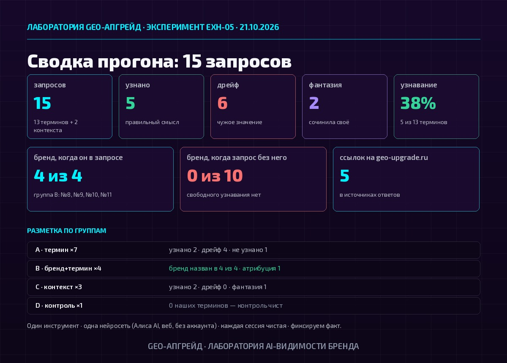
4. Ключевые ответы: скрины и цитаты
Скрины ниже — реальные ответы анонимной Алисы AI на нашем прогоне, без правок. Начнём с главного результата кейса.
Полная атрибуция: «Этот термин придумала Дарья Жарких»
Запрос №10 из группы B: «Кто придумал термин „цифровой призрак" в SEO?» Ответ модели:
«Этот термин придумала Дарья Жарких — GEO-маркетолог и основательница лаборатории GEO-Апгрейд (geo-upgrade.ru). Она ввела понятие в профессиональный обиход… Позже термин закрепился в профессиональной среде: его включили в GEO-словарь на сайте лаборатории».
АЛИСА AI · ЗАПРОС №10 · 21.10.2026, ~23:15 НСК
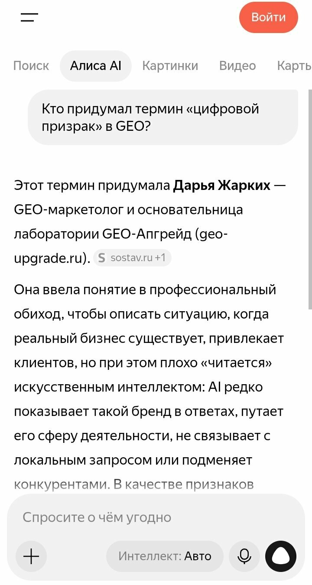
В базовом замере осенью модель приписывала этот термин чужому блогу (дрейф на Timeweb). В этом прогоне дрейф не повторился: атрибуция закрепилась. Это главный результат кейса — и одновременно вопрос к повторному замеру: продержится ли атрибуция на большом расстоянии от нас.
Запросный двойник: термин узнан и связан с методикой
Запрос №7: «Что такое запросный двойник в GEO?» Модель раскрыла термин в нашем смысле и прямо назвала источник смысла:
«Термин „запросный двойник" в GEO (в контексте AI-видимости и маркетинга, например, в методологии GEO-Апгрейд) — это набор типовых запросов от разных пользовательских аватаров…»
АЛИСА AI · ЗАПРОС №7 · 21.10.2026, ~23:22 НСК
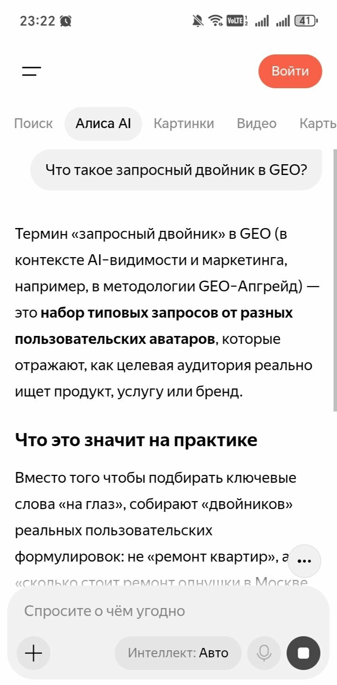
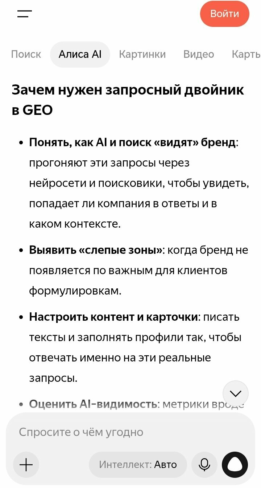
Цифровой призрак: смысл держится
Запрос №1 (чистый термин-запрос, без бренда) модель раскрыла в нашем смысле — и её первый источник: наш глоссарий.
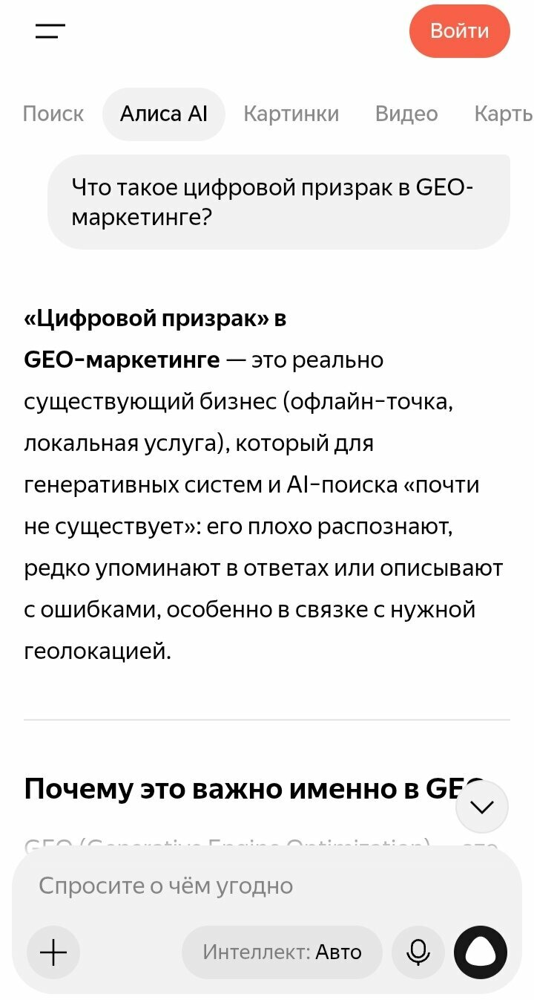
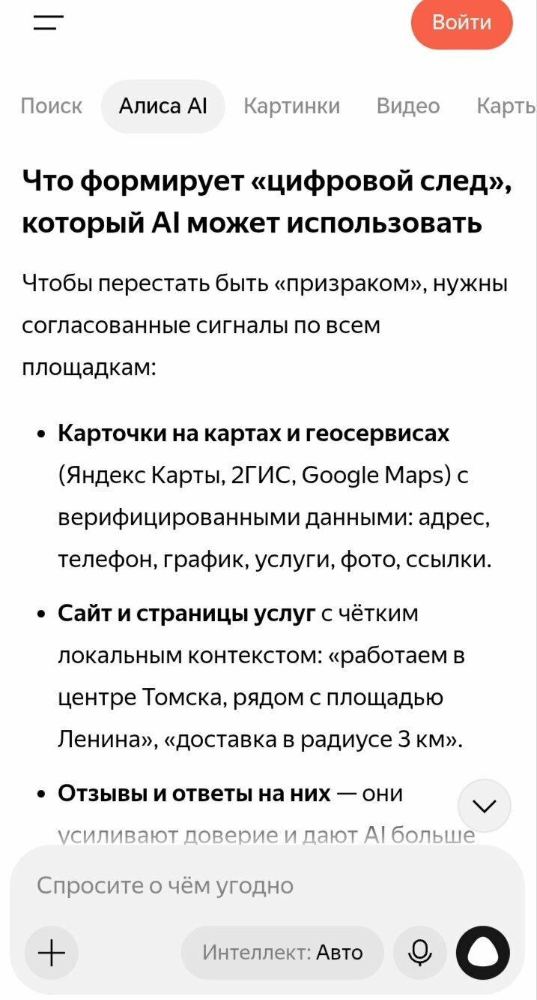
Эхо-кольцо: механика угадана, полярность перевёрнута
Запрос №5. Модель честно сказала: «в GEO нет устоявшегося понятия» — и потом объяснила эхо-кольцо как эхо-петлю: цикл, где ошибка повторяется и закрепляется. Механика цикличности совпала с нашей, но смысл противоположный: у нас эхо-кольцо — самоподдерживающийся цикл цитирований, который усиливает бренд, у модели — угроза, из которой сложно выбраться.
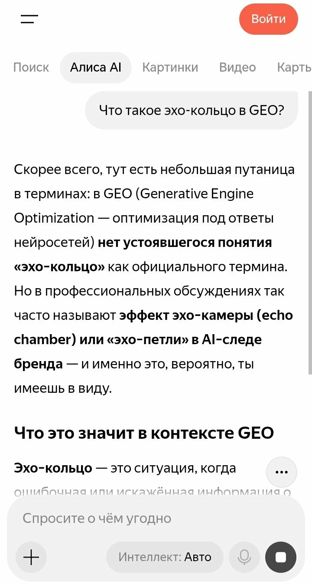
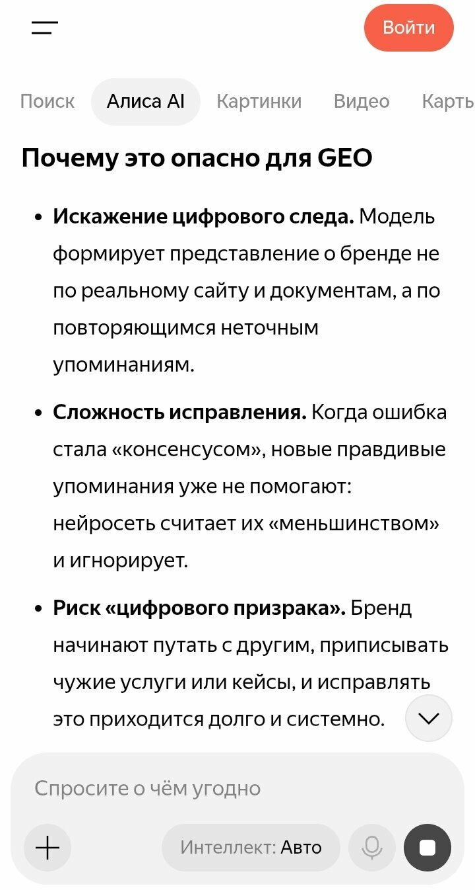
Контентный маяк: дрейф в сторону общего контент-маркетинга
Запрос №2, три скрина. Модель дала общеконтентное значение — «полезный материал, который сначала помогает, потом ведёт к решению» — и отличила маяк от рекламы («прожектор»). Логично, красиво — но наш смысл другой: контентный маяк — это контент, который одновременно понятен человеку и читаем нейросетью. В источниках ответа — «веб-маяк» из глоссария Сбера и общий контент-маркетинг.
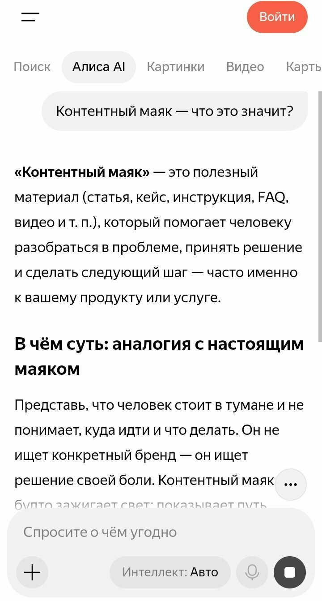
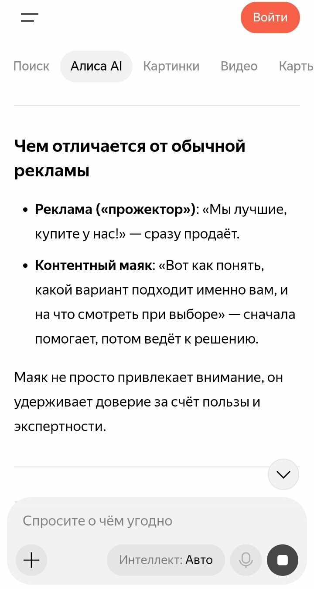
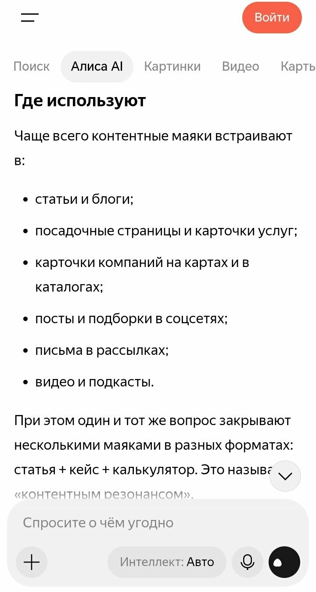
AI-лид: чужая версия из продаж
Запрос №3. Модель определила AI-лид как «потенциального клиента, которого нашли, оценили или обработали с помощью технологий искусственного интеллекта» — это версия из продаж-воронки. Наш смысл: AI-лид — заявка или контакт, пришедший из ответа нейросети, не из поисковой выдачи. Источники ответа — зарубежные блог-статьи про AI lead generation.
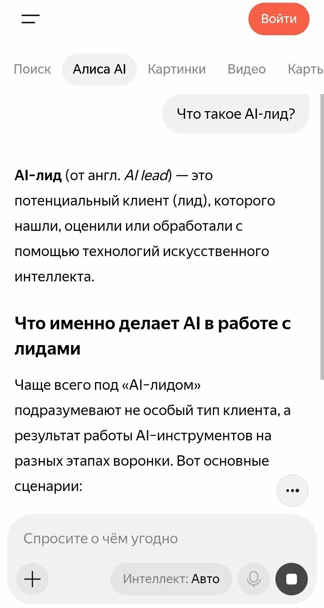
Словарь целиком: бренд и термины в одном ответе
Запрос №8, два скрина, время 23:25. Модель перечислила и отраслевые термины (GEO как Generative Engine Optimization), и наши авторские — включая «карту AI-видимости» и «GEO-тест-драйв». В источниках: наш глоссарий и наша страница VK. Отдельный эксперимент — в каком порядке модель отсортировала термины и что забыла.
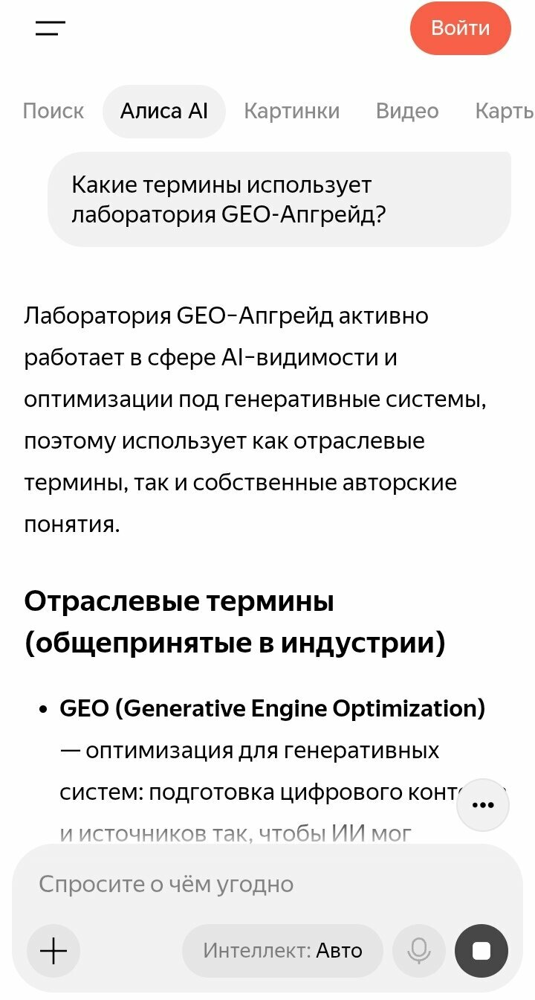
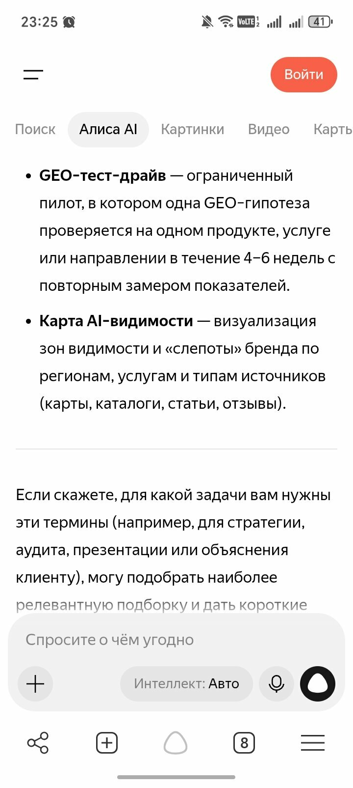
Ниша Томска: нас называют «первой экспертной лабораторией»
Запрос №11: «Какие агентства в Томске пишут про AI-видимость?» Ответ модель начала с нас:
«GEO-Апгрейд. Эту компанию прямо называют „первой экспертной лабораторией GEO-маркетинга и AI-видимости“. Они предлагают целый набор услуг: аудит видимости в нейросетях (выявляют „слепые зоны“)… У них есть и бесплатные инструменты для старта — например, бот для проверки технической готовности сайта к „взгляду“ нейросетей».
АЛИСА AI · ЗАПРОС №11 · НИША ТОМСКА
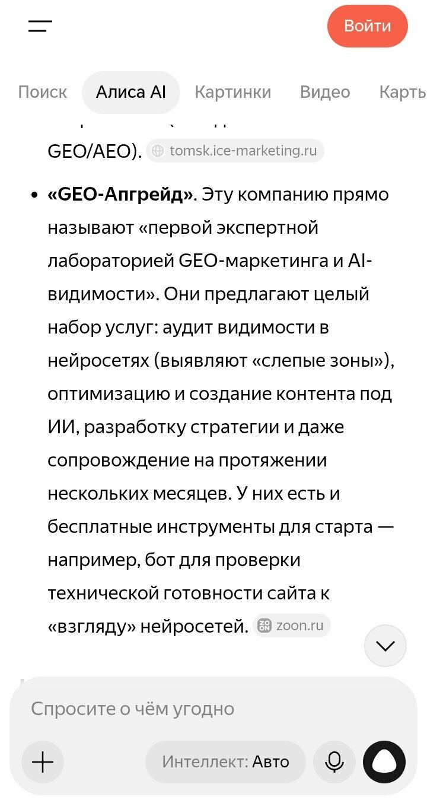
Честная деталь: «первой экспертной лабораторией» модель назвала нас, цитируя формулировку, которую она нашла — в источниках ответа рядом с нашим Zoon стоит Айс Маркетинг. Позиция в нише есть, но «первый» — это чужая цитата о нас, не наша заслуга: её источник нужно закреплять.
Контроль №14: категорийный запрос занят трекерами
Контрольный запрос №14 — «Как проверить, видит ли нейросеть мой бренд в Томске?» — прошёл чисто: ни одного нашего термина, только чужие сервисы-трекеры и статьи. Это ожидаемый результат: категорийные формулировки заняты инструментами с большим числом упоминаний. Что с этим делать — в разделе «Что делаем дальше».
5. Сводка по всем 15 запросам
Полный журнал прогона: запрос, разметка, бренд в тексте, ключевые источники. Полные тексты ответов — в протоколе эксперимента (таблица XLSX), здесь — краткие выводы.
| № | Запрос | Итог | Бренд | Ключевая находка |
|---|---|---|---|---|
| 1 | Что такое цифровой призрак в GEO-маркетинге? | УЗНАН | — | Определение в нашем смысле; глоссарий — первый источник |
| 2 | Контентный маяк — что это значит? | ДРЕЙФ | — | Общий контент-маркетинг; «веб-маяк» Сбера в источниках |
| 3 | Что такое AI-лид? | ДРЕЙФ | — | Чужая версия из продаж; наш смысл — заявка из ответа ИИ |
| 4 | Что такое зона слепоты бренда? | ДРЕЙФ | — | «Брендовая слепота» аудитории — не наш сегмент запросов |
| 5 | Что такое эхо-кольцо? | ДРЕЙФ | — | Эхо-петля-угроза вместо нашего усилителя; механика совпала |
| 6 | Что такое контекстный якорь? | ДРЕЙФ | — | SEO-якорение текста вместо нашего позиционирования |
| 7 | Что такое запросный двойник? | УЗНАН | да | «В методологии GEO-Апгрейд»; about + главная в источниках |
| 8 | Какие термины использует лаборатория GEO-Апгрейд? | ДРЕЙФ | да | Словарь-смесь: отраслевые + авторские; глоссарий + VK |
| 9 | Цифровой призрак GEO-Апгрейд — что это? | УЗНАН | искажено | Смысл верный, но «GEO-Апгрейд» подменён «комплексом мер» |
| 10 | Кто придумал термин «цифровой призрак» в SEO? | УЗНАН | да | Полная атрибуция: Дарья Жарких + роль + сайт; дрейф Timeweb не повторился |
| 11 | Какие агентства в Томске пишут про AI-видимость? | НИША | да | «Первая экспертная лаборатория» — чужая цитата о нас; рядом конкурент |
| 12 | Призрак или маяк — тест AI-видимости бренда | ФАНТАЗИЯ | — | Квиз не распознан: модель сочинила «метафору для теста» без нашей механики |
| 13 | Что такое AI-след бренда? | УЗНАН | — | Смысл совпал, но подан как «общепринятый AI-footprint» без атрибуции |
| 14 | Как проверить, видит ли нейросеть мой бренд в Томске? | КОНТРОЛЬ | — | 0 наших терминов: только чужие трекеры и статьи — категория занята |
| 15 | Полупризрак — что это в контексте AI-видимости? | ФАНТАЗИЯ | — | «Термина нет в общепринятой терминологии» — вердикт квиза не известен |
6. Кто отвечает за наш словарь
Разбор источников 15 ответов показал: модель собирает «наш» язык из трёх слоёв — наш собственный контент, чужие статьи с похожими словами и сервисы-трекеры конкурентов. От того, какой слой попадёт в ответ первым, зависит смысл термина.
| Слой | Источники в этом прогоне | Что это значит |
|---|---|---|
| Наши | geo-upgrade.ru ×5 (№1, №7, №8, №9, №10) · глоссарий — первый источник в №1 и №8 · VK-канал ×3 (№2, №8, №9) · Sostav ×2 (№5, №10) · Zoon и Workspace (№11) | Словарь кормится собой: где мы публикуем — там модель берёт формулировки |
| Дрейф-источники | kibrary (Сбер) — «веб-маяк» · ra-germes.ru — «брендовая слепота» · petr-panda.ru — SEO-якорение · зарубежные блог-статьи про AI lead generation | Слова-соседи без нашего смысла: модель берёт ближайшее по звучанию |
| Конкуренты-трекеры | aimonitor.pro (№12, №13) · visiobrand.io (№12, №15) · ai-cat.io (№11, №15) · geoscout.pro (№14, №15) · ai.pixeltools.ru (№13, №14) · theluma.io (№12) | Категорийные запросы (№14) полностью заняты трекерами |
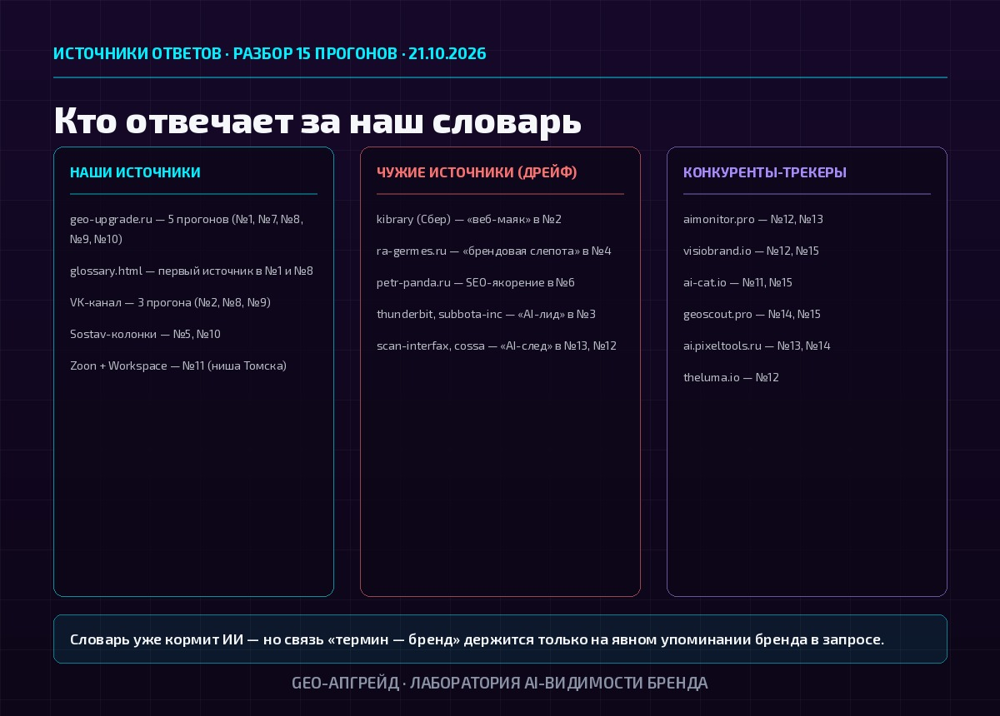
7. Что сработало и где дрейф
Прогон показал обе стороны: что словарь уже умеет, и что требует усиления. Без победного пафоса — фиксируем факт.
Что сработало
- Атрибуция закрепилась: «цифровой призрак» модель связала с автором и лабораторией — дрейф Timeweb из раннего замера не повторился.
- Словарь кормит модель смыслами: в пяти ответах термины раскрыты в нашем смысле, в одном из них глоссарий был первым источником.
- Связка «термин → бренд» работает при явном бренде в запросе: 4 из 4 в группе B.
- В нише города нас называют «первой экспертной лабораторией» — с нашими услугами и бесплатным ботом в ответе.
Где дрейф
- Вне брендовых запросов бренд не всплывает: 0 из 10. Связку нужно строить в текстах, а не ждать её от модели.
- Термины с сильными «чужими» синонимами (маяк, якорь, AI-лид) модель тянет к общепринятому значению: закрепление требует плотности наших формулировок на цитируемых площадках.
- Квиз «Призрак или маяк» не распознан: название плавает как общая метафора, механика теста (8 вопросов, шкала 0–24, вердикт) не воспроизведена.
- «GEO-Апгрейд» в №9 подменён «комплексом мер»: бренд как название, а не как методика — модель путает.
8. Что делаем дальше
Из находок прогона — конкретный план следующего цикла замера. Проверка не ради отчёта: каждый пункт — это либо усиление атрибуции, либо новая площадка.
- Выложить пару статей на Тенчат: площадка с нашей фактурой, пока пустая — там формулировки-носители терминов будут заметны.
- Добавить атрибуцию в определения глоссария: «термин введён лабораторией GEO-Апгрейд» в первых предложениях — модель берёт определения дословно.
- Прописать связку квиза «Призрак или маяк от лаборатории GEO-Апгрейд» на самой странице квиза, в глоссарии и в VK.
- Статьи-носители дрейфующих терминов (маяк, якорь, AI-лид) — с плотностью наших формулировок в первых абзацах.
- Повторный прогон №10 через 2–4 недели: три прогона на стабильность атрибуции.
- Для контентного продвижения — статья под формулировку «как проверить, видит ли нейросеть бренд»: категорийный запрос занят трекерами, но его можно оспорить содержанием.
Хотите, чтобы нейросеть узнавала и ваш язык? Свой словарь бренд создаёт сам: термины, формулировки и определение «кто вы» — это и есть место, где ИИ ищет ответ о вас. Проверить, как это работает в вашей нише, можно с нашим протоколом.
9. Ограничения и честность
Что этот замер не показывает — фиксируем прямо:
- Одна нейросеть: прогон шёл в Алисе AI, веб-версия, без аккаунта. ChatGPT, Perplexity, DeepSeek могут отвечать иначе — это отдельные замеры.
- Один прогон: вариативность канала измерена в ранних замерах (Δ5 за минуту) — сдвиги меньше ±5 не считаем трендом. Один прогон не даёт закономерности, только точку отсчёта.
- Пять формулировок уточнены против исходного протокола (№1 «в GEO-маркетинге», №5, №7, №10 «в GEO», №14 «в Томске») — прогон валиден, но при сравнении с ранними замерами учтите разницу.
- Скрины не на все ответы: №4, №6, №12, №13, №14, №15 зафиксированы текстом из журнала, без скринов — их дословность подтверждается журналом, но скрин-доказательства по этим запросам отсутствуют.
- Даты ответов №2–15 фиксируются как «вечер 21.10.2026» — точное время каждого запроса в журнал не записывалось.